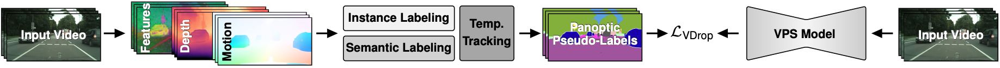
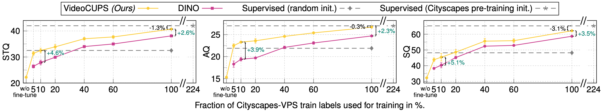
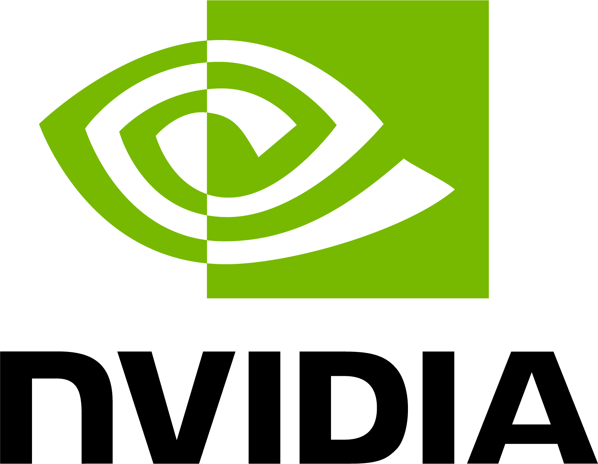
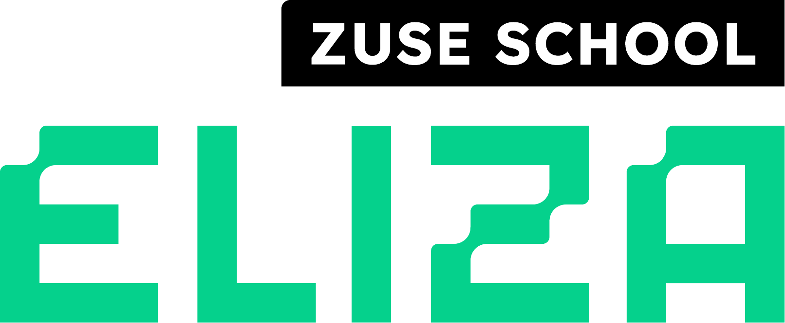

TL;DR: We introduce the task of unsupervised video panoptic segmentation, along with a unified evaluation protocol and four competitive baselines. We propose VideoCUPS, the first method that directly tackles it, generating temporally consistent panoptic pseudo-labels from monocular scene-centric videos using depth, motion, and visual cues, then training an accurate VPS model with a novel Video DropLoss.
Video panoptic segmentation (VPS) aims to jointly detect, segment, and track all objects while partitioning the video into semantically consistent regions. We introduce the task setting of unsupervised VPS, omitting any human supervision. Existing unsupervised scene understanding works mainly focused on image segmentation tasks; the video domain remains underexplored. We propose VideoCUPS, the first unsupervised VPS approach. VideoCUPS generates temporally consistent panoptic video pseudo-labels from scene-centric videos by exploiting unsupervised depth, motion, and visual cues. Training on these pseudo-labels using a novel Video DropLoss yields an accurate, unsupervised VPS model. To benchmark progress, we introduce a comprehensive evaluation protocol and four competitive baselines, extending state-of-the-art unsupervised panoptic image and instance video segmentation models to VPS. VideoCUPS outperforms all baselines and demonstrates strong label-efficient learning. With VideoCUPS, our evaluation protocol, and baselines, we provide a strong foundation for future research on unsupervised VPS.

VideoCUPS generates temporally consistent video panoptic pseudo-labels from monocular scene-centric videos. Instance pseudo-labels come from motion-based region growing on self-supervised optical flow (SMURF) and depth (DynamoDepth). Semantic pseudo-labels come from distilled DINO features (k-means) refined by depth-guided inference. Temporally, instances are propagated and tracked via warped-IoU + Hungarian matching, semantics are smoothed by a 3-frame majority vote, and semantic↔instance assignments are aligned per clip. A pixel-ratio threshold splits things from stuff. The resulting pseudo-labels supervise a Panoptic Cascade MaskTrack R-CNN with DINO ResNet-50, trained with our Video DropLoss and self-enhanced video copy-paste augmentation.
We compare VideoCUPS against four competitive baselines that pair state-of-the-art unsupervised semantic, video-instance, or panoptic image segmentation methods with unsupervised tracking, evaluated with STQ, AQ, and SQ (all in %, higher is better) on Cityscapes-VPS, KITTI-STEP, Waymo, and the out-of-domain MOTS benchmark. Despite training only on monocular videos, VideoCUPS outperforms every baseline on every dataset and metric, including CUPS + SORT, which uses stereo video at training time.
† CUPS trained with monocular videos. Supervised reference in gray.
| Method | Cityscapes | KITTI-STEP | Waymo | MOTS (OOD) | ||||||||
|---|---|---|---|---|---|---|---|---|---|---|---|---|
| STQ | AQ | SQ | STQ | AQ | SQ | STQ | AQ | SQ | STQ | AQ | SQ | |
| Supervised | 42.0 | 27.0 | 65.3 | 53.9 | 59.9 | 48.4 | 22.3 | 12.6 | 39.4 | 20.5 | 12.7 | 33.1 |
| DepthG + VideoCutLER | 9.9 | 3.4 | 28.2 | 13.2 | 8.7 | 20.1 | 7.9 | 2.6 | 23.9 | 14.5 | 6.8 | 30.7 |
| U2Seg + SORT | 11.4 | 5.6 | 23.0 | 24.0 | 21.1 | 27.2 | 10.4 | 4.8 | 22.6 | 14.9 | 7.2 | 30.8 |
| CUPS + SORT | 20.6 | 13.3 | 31.8 | 34.2 | 37.7 | 31.1 | 17.5 | 9.9 | 30.8 | 16.7 | 10.4 | 27.0 |
| CUPS† + SORT | 17.8 | 10.6 | 29.9 | 32.9 | 35.4 | 30.5 | 16.6 | 9.3 | 29.8 | 14.9 | 7.8 | 28.3 |
| VideoCUPS (ours) | 22.2 | 15.3 | 32.3 | 37.3 | 43.6 | 32.0 | 18.4 | 10.7 | 31.6 | 18.6 | 10.5 | 33.0 |

We fine-tune a VideoCUPS-pretrained model on varying fractions of Cityscapes-VPS labels and compare against the same architecture initialized with DINO. With only 10% of the labels, VideoCUPS already reaches the STQ of a randomly initialized supervised model trained on the full Cityscapes-VPS train set, and improves over the DINO-initialized baseline by 4.6% STQ. At 100% labels, VideoCUPS still improves over DINO by +2.6% STQ, +2.3% AQ, and +3.5% SQ.
Below, we showcase video panoptic predictions on Cityscapes demo video sequences. Where the baselines struggle with temporal consistency, VideoCUPS produces stable, temporally coherent panoptic masks.
@inproceedings{Reich:2026:VideoCUPS,
title = {Scene-Centric Unsupervised Video Panoptic Segmentation},
author = {Reich, Christoph and Hahn, Oliver and Araslanov, Nikita and
Leal-Taix{\'e}, Laura and Rupprecht, Christian and
Cremers, Daniel and Roth, Stefan},
booktitle = {Proceedings of the IEEE/CVF Conference on Computer Vision and Pattern Recognition (CVPR)},
year = {2026}
}
Acknowledgments: This project was partially supported by the European Research Council (ERC) Advanced Grant SIMULACRON (grant agreement No. 884679), DFG project CR 250/26-1 “4D-YouTube”, and GNI Project “AICC”. This project was also partially supported by the ERC under the European Union’s Horizon 2020 research and innovation programme (grant agreement No. 866008). Additionally, this work has been co-funded by the LOEWE initiative (Hesse, Germany) within the emergenCITY center [LOEWE/1/12/519/03/05.001(0016)/72] and by the Deutsche Forschungsgemeinschaft (German Research Foundation, DFG) under Germany’s Excellence Strategy (EXC 3066/1 “The Adaptive Mind”, Project No. 533717223). Christoph Reich is supported by the Konrad Zuse School of Excellence in Learning and Intelligent Systems (ELIZA) through the DAAD programme Konrad Zuse Schools of Excellence in Artificial Intelligence, sponsored by the German Federal Ministry of Education and Research. Christian Rupprecht is supported by an Amazon Research Award. Finally, we acknowledge the support of the European Laboratory for Learning and Intelligent Systems (ELLIS) and thank Simone Schaub-Meyer for insightful discussions. Website template from DreamFusion and MVDream.

